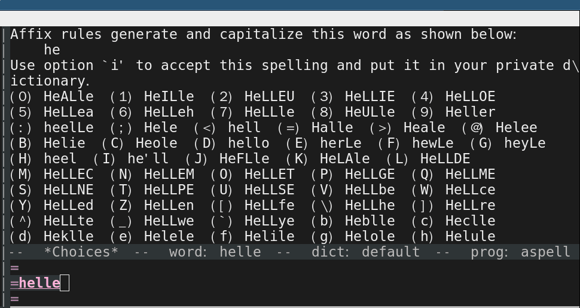
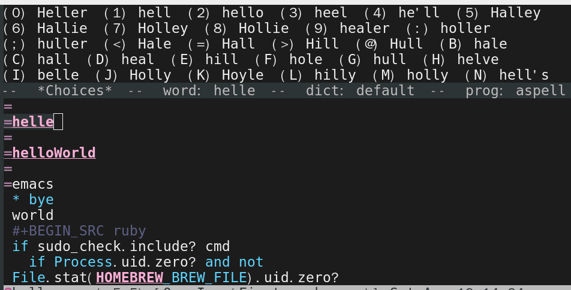
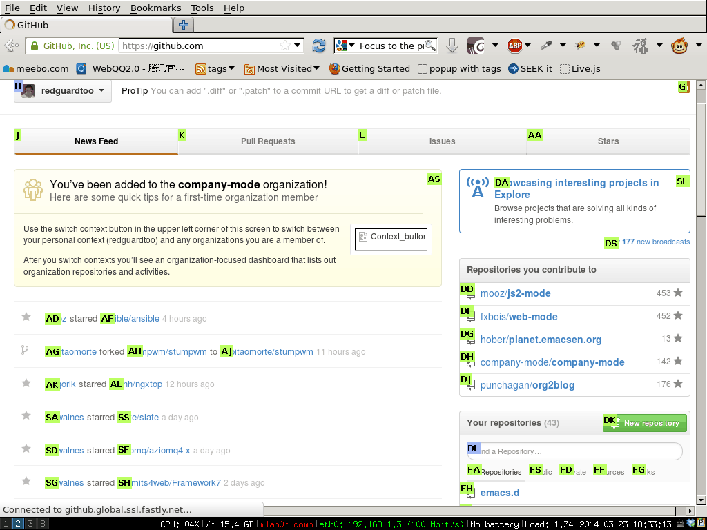
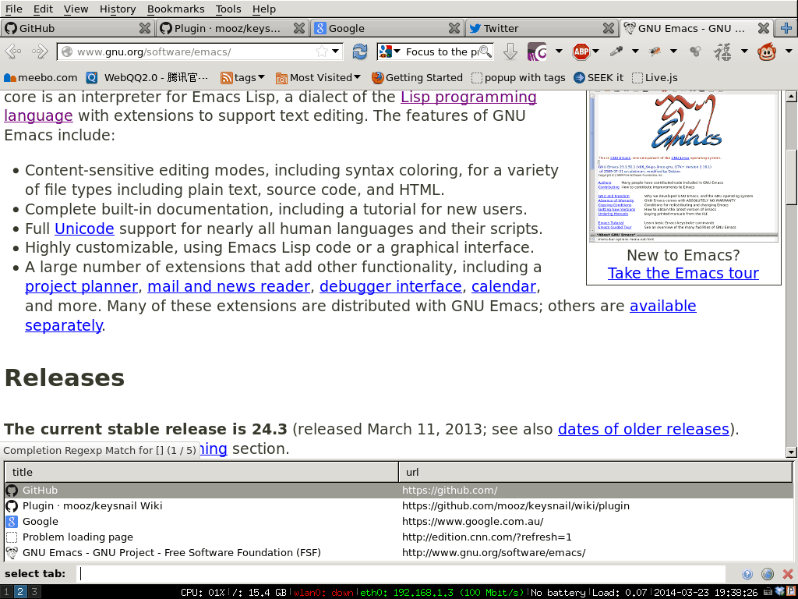

What's AOP in Java
Yesterday in a interview I was asked what's AOP and how to use it. The two interviewers
I was wordless then so I came back to read the documentation.
It turns out AOP is simple. It's like emacs lisp's defadvice but less powerful. I've been using this since day one on different languages.
Please read slashdot discussion about AOP.
Here is the comment from MarkusQ,
by MarkusQ (450076) on Sunday April 24, 2005 @11:01PM (#12333504) Journal Exactly. When I implemented this sort of thing for a project in Ruby a few years back, I just grabbed all the CLOS nomenclature because I was familiar with it. I didn't even realize I was using "AOP with funny names" until someone reading the code mentioned it. When he asked why I didn't use the "standard" terminology, I lent him a copy of "Object Oriented Programing in Common Lisp" (c) 1988, and asked why the AOP people had to invent new words for everything. I have yet to get an answer. --MarkusQ
So it's just some enterprise guy inventing new buzz words (cross-cutting concern, for example) on some old idea.
Now as guy who got seven years academical training on system design (Bachelor and Master degree in system controlling major from best engineering school in China), I will give you some precious advice on how to use this thing (AOP in java, API hook in C, defadvice in Emacs lisp or whatever the buzz word is):
DO NOT USE IT IN ANY REAL SYSTEM OR APPLICATION!
Here are the reasons:
- The code change an external API's behavior
- The code's location is not close to the API's
- The system being corrupt quickly with those AOP things
Why Gnus is better than Gmail
Here is my use case. My agent notify me that there is a potential contract from a company named "FF".
My first reaction is to reply the email with "Great! Please forward my CV".
Before I press the "Send" button, it occurs to me that other agents have possibly already submitted my CV to FF since it is a big organization. I need double check.
I save current email as draft, search all the mails containing "FF" and forward them to the original email I've not sent yet. Then my agent could figure out whether other guys have already represented me for the same opportunity.
This operation is doable in desktop application like Outlook. I need search emails in a new dialog box. Select emails. Then drag them to the original email.
It's hard to do this thing in Gmail.
In Emacs, the job can be done easily:
- Step 1, Switch to Groups buffer (the buffer which lists email folder). press key
G Gor run commandM-x gnus-group-make-nnir-group, input the keyword "FF" to start search - Step 2, Mark the emails I want to forward with hot key
# - Step 3, Press key
C-c C-for run commandM-x gnus-summary-mail-forward. A new buffer is created. It contains a big chuck of xml string wrapped by either "<#multipart>" tag or "<#mml>" tag. - Step 4, Select and copy that string into you original email. Done!
Step 4 could be improved.
Insert below code into ~/.emacs:
(defun message-select-forwarded-email-tags ()
"Select the <#mml-or-what-ever> tags in message-mode."
(interactive)
(let (start rlt)
(when (search-forward "<#")
(setq start (point))
(push-mark (point) t t)
(goto-char (point-max))
(search-backward ">")
(forward-char)
(setq rlt t))
rlt))
(defun message-copy-select-forwarded-email-tags ()
"Copy the <#mml-or-what-ever> tags in message-mode."
(interactive)
(save-excursion
(cond
((message-select-forwarded-email-tags)
(copy-region-as-kill (region-beginning) (region-end))
(message "forwarded email tags copied!"))
(t (message "NO forwarded email tags found!")))))
All you need is "M-x message-copy-select-forwarded-email-tags" to copy the tags into kill-ring.
UPDATE: This is only a case study. My complete guide on Gnus is at http://blog.binchen.org/posts/notes-on-using-gnus.html.
Migrate blog from wordpress into nikola
CREATED:
UPDATED:
If you are only interested in web page optimization, start from the second section of the article.
Migrate from WordPress to Nikola
# you might need need `sudo apt-get install python-gdbm` on Debian
# install python2 and make sure sqlite is supported
sudo USE="sqlite" emerge -a =python-2* # Gentoo Linux
# one debian/ubuntu, you need: `apt-get install libxml2-dev libxslt1-dev python-dev libjpeg-dev` for lxml
# Not to mess up with root
export PATH=$PATH:$HOME/.local/bin
# Best way to get latest pip,
# see https://packaging.python.org/installing/#install-pip-setuptools-and-wheel
python ~/bin/get-pip.py --user # ~/.local/bin/pip
# install dependencies (requests is required by zen theme)
# "sudo pip install" could screw up my python setup on Gentoo Linux
# @see https://forums.gentoo.org/viewtopic-t-1006044-view-next.html?sid=931f7be2c16ac99fd85eb2940c0bf82b
# so install the python packages in my HOME directory might be better
# @see http://stackoverflow.com/questions/2915471/install-a-python-package-into-a-different-directory-using-pip
pip install --user lxml markdown webassets phpserialize nikola requests
# create root directory of nikola
mkdir -p ~/.config/nikola;cd ~/.config/nikola
# import from wordpress dump
nicola import_wordpress my_wordpress_dump.xml
# since I use zen theme, I need install lessc
# obviously NodeJS is required
npm install -g less # use portable nodejs in $HOME is better
# I use zen theme, before intalling new theme, clean the legacy theme at first
rm -rf themes/zen/;nikola install_theme zen
# or rm -rf themes/zen/; http_proxy=http://127.0.0.1:8087 nikola install_theme zen at mainland China
# build the web site
nikola build
Use below command to fix embedded code in HTML files:
find -name '*.wp' -exec grep -l "\[sourcecode.*\<diff\>.*\]" {} \; |xargs sed -i 's/\[sourcecode.*\<diff\>.*\]/<pre class="brush: diff;">/g
find -name '*.wp' -exec grep -l "~~~~~~~~~~~~" {} \;|xargs sed -i "s%~~~~~~~~~~~~%</pre>%g"
Manually fixed those articles with Chinese title in url_map.csv
Use below script to fixed the xml dumped from wordpress:
#!/usr/bin/python
import getopt, sys, csv
def usage():
print '''
NAME
fix url mapping when migrate wordpress blog into nikola
Usage
python fix-url-map.py [options]
'''[1:-1]
if __name__ == '__main__':
try:
opts, args = getopt.getopt(sys.argv[1:], "hf:x:", ["help", "file=","xml="])
except getopt.GetoptError as err:
# print help information and exit:
print str(err) # will print something like "option -a not recognized"
usage()
sys.exit(2)
file=""
xml=""
for o, a in opts:
if o in ("-h", "--help"):
usage()
sys.exit()
elif o in ("-f", "--file"):
file= a
elif o in ("-x", "--xml"):
xml=a
else:
assert False, "unhandled option"
with open(xml, 'r') as content_file:
content = content_file.read()
with open(file, 'rb') as csvfile:
spamreader = csv.reader(csvfile, delimiter=',')
for row in spamreader:
content=content.replace(">"+row[0]+"<",">"+row[1]+"<")
print content
Import the xml into http://disqus.com.
You can use javascript to re-direct the URL, so your old article links are still valid. Ask at http://stackoverflow.com or contact your local Javascript developers on how to do it. It's simple task but a little boring.
Optimization
I developed org2nikola to convert Org subtree into Nikola page.
Instead of hacking conf.py, I tweak the theme's javascript/html/css directly. It's simpler and more flexible.
For example, the Zen theme uses JQuery plugins to format time. I replace JQuery with Moment.js v1.0 which is much smaller.
Since only a few icons from Font Awesome is used by Zen theme.. We can use NodeJS plugin font-spider to trim down the font file.
Other conventional front end tricks like static assets concatenating/minifying can also be used. These tricks are introduced everywhere. So I won't waste time on details.
In order to see the real example of optimization, please visit http://blog.binchen.org. Watching through the browser's developer tool, you can see my web page is 90% smaller than pages without optimization.
highlight.js is the best solution for code syntax highlighting. I customized the highlight.js to render only the programming languages I use.
My static blog is hosted at GitHub Pages.
What's the best spell check setup in emacs
UPDATED:
CREATED:
I will show the minimum setup and explain details.
Topics covered in official manual (flyspell-mode-predicate, for example) are NOT discussed.
You can check my complete configuration HERE.
Suggestion for non-programmers
Emacs finds the right dictionary by querying the locale.
You can run the command locale in the shell to get current locale.
Below set up force Emacs to use the dictionary "en_US":
;; find aspell and hunspell automatically
(cond
;; try hunspell at first
;; if hunspell does NOT exist, use aspell
((executable-find "hunspell")
(setq ispell-program-name "hunspell")
(setq ispell-local-dictionary "en_US")
(setq ispell-local-dictionary-alist
;; Please note the list `("-d" "en_US")` contains ACTUAL parameters passed to hunspell
;; You could use `("-d" "en_US,en_US-med")` to check with multiple dictionaries
'(("en_US" "[[:alpha:]]" "[^[:alpha:]]" "[']" nil ("-d" "en_US") nil utf-8)))
;; new variable `ispell-hunspell-dictionary-alist' is defined in Emacs
;; If it's nil, Emacs tries to automatically set up the dictionaries.
(when (boundp 'ispell-hunspell-dictionary-alist)
(setq ispell-hunspell-dictionary-alist ispell-local-dictionary-alist)))
((executable-find "aspell")
(setq ispell-program-name "aspell")
;; Please note ispell-extra-args contains ACTUAL parameters passed to aspell
(setq ispell-extra-args '("--sug-mode=ultra" "--lang=en_US"))))
That's it!
Some people prefer hunspell because hunspell gives better suggestions for typo fix. We can run both programs to demonstrate,
echo htink | aspell -a --sug-mode=ultra --lang=en_US
echo htink | hunspell -a -d en_US
Run man aspell or man hunspell in shell if you have more questions. I've nothing more to say.
Suggestion for programmers
I recommend aspell instead of hunspell (Though hunspell is fine).
Please insert below code into your ~/.emacs:
;; if (aspell installed) { use aspell}
;; else if (hunspell installed) { use hunspell }
;; whatever spell checker I use, I always use English dictionary
;; I prefer use aspell because:
;; 1. aspell is older
;; 2. looks Kevin Atkinson still get some road map for aspell:
;; @see http://lists.gnu.org/archive/html/aspell-announce/2011-09/msg00000.html
(defun flyspell-detect-ispell-args (&optional run-together)
"if RUN-TOGETHER is true, spell check the CamelCase words."
(let (args)
(cond
((string-match "aspell$" ispell-program-name)
;; Force the English dictionary for aspell
;; Support Camel Case spelling check (tested with aspell 0.6)
(setq args (list "--sug-mode=ultra" "--lang=en_US"))
(when run-together
(cond
;; Kevin Atkinson said now aspell supports camel case directly
;; https://github.com/redguardtoo/emacs.d/issues/796
((string-match-p "--camel-case"
(shell-command-to-string (concat ispell-program-name " --help")))
(setq args (append args '("--camel-case"))))
;; old aspell uses "--run-together". Please note we are not dependent on this option
;; to check camel case word. wucuo is the final solution. This aspell options is just
;; some extra check to speed up the whole process.
(t
(setq args (append args '("--run-together" "--run-together-limit=16")))))))
((string-match "hunspell$" ispell-program-name)
;; Force the English dictionary for hunspell
(setq args "-d en_US")))
args))
(cond
((executable-find "aspell")
;; you may also need `ispell-extra-args'
(setq ispell-program-name "aspell"))
((executable-find "hunspell")
(setq ispell-program-name "hunspell")
;; Please note that `ispell-local-dictionary' itself will be passed to hunspell cli with "-d"
;; it's also used as the key to lookup `ispell-local-dictionary-alist'
;; if we use different dictionary
(setq ispell-local-dictionary "en_US")
(setq ispell-local-dictionary-alist
'(("en_US" "[[:alpha:]]" "[^[:alpha:]]" "[']" nil ("-d" "en_US") nil utf-8)))
;; new variable `ispell-hunspell-dictionary-alist' is defined in Emacs
;; If it's nil, Emacs tries to automatically set up the dictionaries.
(when (boundp 'ispell-hunspell-dictionary-alist)
(setq ispell-hunspell-dictionary-alist ispell-local-dictionary-alist)))
(t (setq ispell-program-name nil)))
;; `ispell-cmd-args' is useless, it's the list of *extra* arguments we will append to the ispell process when `ispell-word' is called.
;; `ispell-extra-args' is the command arguments which will *always* be used when start ispell process
;; Please note when you use hunspell, `ispell-extra-args' will NOT be used.
;; Hack `ispell-local-dictionary-alist' instead.
(setq-default ispell-extra-args (flyspell-detect-ispell-args t))
(defun my-ispell-word-hack (orig-func &rest args)
"Use Emacs original arguments when calling `ispell-word'.
When fixing a typo, avoid pass camel case option to cli program."
(let* ((old-ispell-extra-args ispell-extra-args))
(ispell-kill-ispell t)
;; use emacs original argument
(setq ispell-extra-args (my-detect-ispell-args))
(apply orig-func args)
;; restore our own ispell arguments
(setq ispell-extra-args old-ispell-extra-args)
(ispell-kill-ispell t)))
(advice-add 'ispell-word :around #'my-ispell-word-hack)
(advice-add 'flyspell-auto-correct-word :around #'my-ispell-word-hack)
(defun text-mode-hook-setup ()
;; Turn off RUN-TOGETHER option when spell check text-mode
(setq-local ispell-extra-args (flyspell-detect-ispell-args)))
(add-hook 'text-mode-hook 'text-mode-hook-setup)
There is one minor issue in this setup. If a camel case word contains correct two character sub-word. Aspell will regard the word as typo. So aspell might produce some noise (aspell 0.60.8 has new option --camel-case which solves this problem completely).
See https://github.com/redguardtoo/emacs.d/blob/master/lisp/init-spelling.el for the solution.
Why
Aspell
aspell is recommended because its option --run-together (since aspell 0.60.8, option --camel-case replaces =run-together). That option could check the camel case word. Variable name often uses camel case naming convention these days. Read my Effective spell check in Emacs for advanced tips.
If Emacs starts an aspell process with --run-together option, that process is not closed so it can be re-used by other commands.
This behavior will be a problem if you want Emacs/aspell correct the typo by running the command ispell-word because an aspell process with "–run-together" will produce too much noise.
For example, for a typo "helle" Emacs will give you extra candidates. It's hard to find the desired word "hello": 
The better solution is before running "M-x ispell-word", we'd better restart the aspell process without the argument "–run-together".
Here is the screen shot after we applying this fix: 
As I mentioned, the global variable ispell-extra-args contains arguments Emacs will always append to a spell checker process (aspell). That's the only variable you need care about.
There is another variable ispell-cmd-args. It is actually some extra arguments Emacs could send to the existing spell checker process when you "M-x ispell-word". In my opinion, it's useless. I mention it because its name is confusing. ispell-extra-args contains command line arguments the spell checker always uses. The ispell-cmd-args contains the extra arguments which might be used.
Hunspell
I cannot find hunspell option to check camel case words.
Hunspell always checks the environment variable LC_ALL, LC_MESSAGES and LANG at first to find the default dictionary unless you give it the dictionary in the command line. If it cannot find the default dictionary, the spell checker process won't start. Aspell does not have this issue. For example, if aspell cannot find the zh_CN dictionary, it will fall back into English dictionary.
Specify the ispell-extra-args will NOT stop hunspell to search for the default dictionary at the beginning because ispell-extra-args is NOT used by hunspell.
For example, I am a Chinese and my locale is zh_CN.utf-8. So hunspell always searches the dictionary zh_CN. Even I'm only interested in English spell checking.
To specify the dictionary explicitly, I need hack the Emacs code which is kind of mess.
Finally, I figured out,
(setq ispell-program-name "hunspell")
;; below two lines reset the the hunspell to it STOPS querying locale!
(setq ispell-local-dictionary "en_US") ; "en_US" is key to lookup in `ispell-local-dictionary-alist`
(setq ispell-local-dictionary-alist
'(("en_US" "[[:alpha:]]" "[^[:alpha:]]" "[']" nil ("-d" "en_US") nil utf-8)))
;; new variable `ispell-hunspell-dictionary-alist' is defined in Emacs
;; If it's nil, Emacs tries to automatically set up the dictionaries.
(when (boundp 'ispell-hunspell-dictionary-alist)
(setq ispell-hunspell-dictionary-alist ispell-local-dictionary-alist))
You can pass the extra arguments to the hunspell by tweaking ispell-local-dictionary-alist.
FAQ
How to setup Hunspell
The easiest way is to set up environment variable DICPATH.
For example, on macOS (LibreOffice is installed first),
export DICPATH=/Applications/LibreOffice.app/Contents/Resources/extensions/dict-en:/Applications/LibreOffice.app/Contents/Resources/extensions/dict-es
hunspell -D # list available/loaded dictionaries
You can also run hunspell -D in shell to figure out where hunspell actually searches dictionaries.
How to embed button in wxDataViewListCtrl
Before creating wxDataViewListCtrl, it's better to detect information about text size so that we can set the column width and height intelligently.
Here is the code:
void GuessRowSize(int* w, int* h) {
//@see http://sourceforge.net/apps/trac/codelite/browser/trunk/LiteEditor/new_build_tab.cpp?rev=5804
// Determine the row height
wxBitmap tmpBmp(1, 1);
wxMemoryDC memDc;
memDc.SelectObject(tmpBmp);
wxFont f = wxSystemSettings::GetFont(wxSYS_ANSI_FIXED_FONT);
int xx, yy;
memDc.GetTextExtent(wxT("Tp"), &xx, &yy, NULL, NULL, &f);
//enough height for ICON
*h=yy<16? 16: yy;
memDc.GetTextExtent("Wp", &xx, &yy, NULL, NULL, &f);
*w=xx/2;
return;
}
wxDataViewListCtrl* ctrl=new wxDataViewListCtrl(parent,-1);
ctrl->Create(parent,id,wxDefaultPosition,wxDefaultSize);
int w,h;
GuessRowSize(&w,&h);
//hard code width may not be good, may be can use w ,h
AppendTextColumn(_T("Column 1"),wxDATAVIEW_CELL_INERT,200 /*width*/);
//must be called after Create()
ctrl->SetRowHeight(h+6);
// well I need provide button render by myself
class wxDataViewMyButtonRenderer: public wxDataViewCustomRenderer, public wxTimer
{
public:
wxDataViewMyButtonRenderer( const wxString &varianttype = wxT("wxString"),
int align = wxDVR_DEFAULT_ALIGNMENT );
virtual bool SetValue( const wxVariant &value );
virtual bool GetValue( wxVariant &value ) const;
virtual bool Render( wxRect, wxDC*, int);
virtual wxSize GetSize() const;
virtual void Notify();
void SetParent(GalleryListView*);
// Implementation only, don't use nor override
virtual bool ActivateCell(const wxRect& rect,
wxDataViewModel *model,
const wxDataViewItem& item,
unsigned int col,
const wxMouseEvent *mouseEvent);
private:
wxString m_value;
bool m_button_clicked;
wxRect m_cell_rect;
GalleryListView* m_parent;
protected:
DECLARE_DYNAMIC_CLASS_NO_COPY(wxDataViewMyButtonRenderer)
};
When user click one row, the ActivateCell is called, we can use some rect detect algorithm to find if the button rect is clicked.
There is no mouse up event handler! So I have to hack, basically start a wxTimer when button clicked and draw the button up effect after about 1 second in Notify(). That's why I ask wxDataViewMyButtonRenderer to inherit from wxTimer.
To draw the button up effect, I need ask the parent wxDataViewListCtrl to refresh itself, so that the button's Render() method has a chance to be called. That's why we need SetParent().
Here is the part of implementation:
bool
wxDataViewMyButtonRenderer::ActivateCell(const wxRect& rect,
wxDataViewModel *model,
const wxDataViewItem& item,
unsigned int col,
const wxMouseEvent *mouseEvent)
{
wxDataViewListStore* store=(wxDataViewListStore*) model;
if ( mouseEvent ) {
if ( !wxRect(GetSize()).Contains(mouseEvent->GetPosition()) ){
return false;
}
wxVariant item_value_pdf;
store->GetValueByRow(item_value_pdf , store->GetRow(item),0);
wxVariant item_value_created;
store->GetValueByRow(item_value_created , store->GetRow(item),1);
m_button_clicked=true;
m_cell_rect=rect;
} else {
wxLogDebug(_T("Sorry, I don't handle keyboard"));
}
return true;
}
bool
wxDataViewMyButtonRenderer::Render( wxRect rect, wxDC *dc, int state )
{
wxLogDebug(_T("Render called"));
// Ensure that the check boxes always have at least the minimal required
// size, otherwise DrawCheckBox() doesn't really work well. If this size is
// greater than the rect size, the checkbox will be truncated but this is a
// lesser evil.
wxSize size = rect.GetSize();
size.IncTo(GetSize());
rect.SetSize(size);
// draw button
if(m_button_clicked==true && rect.Intersects(m_cell_rect)){
//draw the button when clicked
dc->SetBrush(wxBrush(wxColour(65, 150, 65), wxBRUSHSTYLE_SOLID));
dc->SetPen( *wxBLACK_PEN );
dc->DrawRectangle(rect);
// draw button push down effect. since we cannot detect mouse up event, we use
// timer to draw it
const int time_to_button_up=350;
StartOnce(time_to_button_up);
} else {
// draw normal button
dc->SetBrush(wxBrush(wxColour(84, 174, 84), wxBRUSHSTYLE_SOLID));
dc->SetPen( *wxBLACK_PEN );
dc->DrawRectangle(rect);
//draw inner white border
rect.Deflate(1);
dc->SetPen( *wxWHITE_PEN );
dc->DrawRectangle(rect);
}
dc->SetTextForeground(*wxWHITE);
dc->DrawLabel(m_value,wxRect(dc->GetTextExtent(m_value)).CentreIn(rect));
return true;
}
popup function where your cursor is in
Which Func Mode will display the current function name in the mode line.
But I can't use it.
It's because I reduce my mode-line into minimum to make it work with my tiny netbook.
Showing the function in header is also not possible because it conflicts with my color theme.
So I choose to display the function name in a popup.
Insert below code into ~/.emacs,
(autoload 'which-function "which-func")
(autoload 'popup-tip "popup")
(defun copy-yank-str (msg)
(kill-new msg)
(with-temp-buffer
(insert msg)
(shell-command-on-region (point-min) (point-max)
(cond
((eq system-type 'cygwin) "putclip")
((eq system-type 'darwin) "pbcopy")
(t "xsel -ib")
))))
(defun popup-which-function ()
(interactive)
(let ((msg (which-function)))
(popup-tip msg)
(copy-yank-str msg)
))
The extra bonus is "popup-which-function" will also insert the function name into clipboard and kill ring.
The above code need package "popup.el" to be installed.
Screen shot:
 #+image/pop-which-func-nq8.png
#+image/pop-which-func-nq8.png 
paste string from clipboard into minibuffer in Emacs
First, I find M-Y is easier to press when paste string into minibuffer than old "Shift+Insert". "Ctrl-V" is not supported in some terminals.
Second, integrating some command line clipboard tool into Emacs is better than Emacs X clipboard. Command line tool works in any environment. For example, when you log into a remote server with ssh, your local computer could share clipboard with your Emacs in remote shell. Please note in this example, you need using X11 forward over ssh, usually it's already set up on server.
Here is the code:
(defun paste-from-x-clipboard()
(interactive)
(shell-command
(cond
(*cygwin* "getclip")
(*is-a-mac* "pbpaste")
(t "xsel -ob"))
1))
(defun my/paste-in-minibuffer ()
(local-set-key (kbd "M-y") 'paste-from-x-clipboard))
(add-hook 'minibuffer-setup-hook 'my/paste-in-minibuffer)
Upload emacs package to marmalade
Thanks to Sebastian Wiesner for providing a python script to upload package to http://marmalade-repo.org/.
sudo pip install requests keyring curl -L https://raw.githubusercontent.com/lunaryorn/dotfiles/master/emacs/bin/marmalade-upload > ~/bin/marmalade-upload && chmod +x ~/bin/marmalade-upload ~/bin/marmalade-upload -h # see help
Please note if the same version already exists on server, I need delete it before uploading.
Use firefox in Emacs way
UPDATED:
CREATED:
I use keysnail. it's a firefox addon to convert firefox into Emacs.
I install keysnail's own plugins "HoK" and "Tanything".
Here are the use cases of keysnail.
Click & Copy the links
Install the HoK.
Insert below code into ~/.keysnail.js:
hook.setHook("PluginLoaded", function () {
if (!plugins.hok) return;
/* HoK 1.3.9+ required */
plugins.hok.pOptions.selector = plugins.hok.pOptions.selector
/* feedly */
+ ", *[data-uri]" + ", *[data-selector-toggle]" + ", *[data-page-action]" + ", *[data-app-action]"
/* google plus */
+ ", *[guidedhelpid]"
/* twitter */
+ ", *[data-item-count]";
});
key.setGlobalKey(["C-c","C-f"], function (aEvent, aArg) {
ext.exec("hok-start-foreground-mode", aArg);
}, "Hok - Foreground hint mode", true);
key.setGlobalKey(["C-c","C-b"], function (aEvent, aArg) {
ext.exec("hok-start-background-mode", aArg);
}, "HoK - Background hint mode", true);
key.setGlobalKey(["C-c","C-y"], function (aEvent, aArg) {
ext.exec("hok-yank-foreground-mode", aArg);
}, "HoK - Background hint mode", true);
key.setGlobalKey(["C-c","C-;"], function (aEvent, aArg) {
ext.exec("hok-start-extended-mode", aArg);
}, "HoK - Extented hint mode", true);
key.setGlobalKey(["C-c", "C-e"], function (aEvent, aArg) {
ext.exec("hok-start-continuous-mode", aArg);
}, "Start continuous HaH", true);
Now I can press "Ctrl-C Ctrl-F" to select the links to click.
The links will be highlighted as below screen shot: 
I can press the highlighted hint to click the link.
Copy the link into clipboard is also easy. I press "C-c C-y" and similar UI will be displayed. I press the hint above to finish the operation.
Copy the text of link
This is my most favorite tool. As a developer, I need copy text of links from bug tracking software and paste it into git commit message frequently.
That's error prone because:
- The links are cluttered so it's hard to select the text of the link without actually clicking the link.
- The web UI of bug tracing system may use some CSS magic. Only part of the text of links are displayed. So it's impossible to select the text at all. For example, JIRA will display file name of "Screenshot 03/05/2014-193024.png" as "Screenshot 03/05/2014…png".
If you use keysnail+HOK, it's as simple as press hot key "C-c ; Y". That's it!
Switch tab
Install the Tanything.
Insert below code into ~/.keysnail.js:
key.setGlobalKey(["C-c", "C-a"], function (ev, arg) {
ext.exec("tanything", arg);
}, "view all tabs", true);
Press "Ctrl-C Ctrl-A", you got below UI: 
Tanything will locate the tab by finding match in web page's title or URL.
My keysnail set up
You can download my ~/.keysnail.js from HERE.
#+image/keysnail-hok-nq8.png  #+image/keysnail-tanything-nq8.png
#+image/keysnail-tanything-nq8.png 
Debug Emacs Lisp code the hard way
I met some issue when using helm several days ago.
With the help from Michael Heerdegen, I can locate the line error message is dumped.
But the problem is I cannot get the backtrace at all.
So I insert some backtrace printing code above that line and "M-x eval-buffer":
(with-output-to-temp-buffer "backtrace-output"
(let ((var 1))
(save-excursion
(setq var (eval '(progn
(1+ var)
(list 'testing (backtrace))))))))
It turns out that some third party package I installed changes the emacs variable "display-buffer-function". I guess that's why the backtrace is blocked. Because backtrace is usually dumped into a backtrace buffer. And backtrace buffer's is actually influenced by the variable.